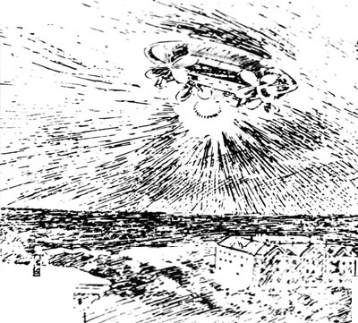

La mystérieuse lumière volante qui a survolé le Collège Sainte-Marie, à Oakland, puis est partie pour San
Francisco. Elle est exactement comme décrite par les Sacramentiens, et semblable au croquis publié il y a
quelques jours dans "The Call" d'après une description fournie par quelqu'un qui l'a vueSan Fransisco Call

Par un soir morne et pluvieux, une lumière électrique propulsée par une force mystérieuse passe à basse
altitude au-dessus de la ville de Sacramento (Californie), évitant habilement les hauteurs avant de disparaître. Elle est vue
par des centaines de témoins. Certains décriront un objet énorme, en forme de cigare, fabriqué en aluminium et pourvu de
grandes ailes. Personne ne met en doute l'origine terrestre de l'objet, certains affirmant même avoir entendu une
voix s'écrier : On espère bien être à San Francisco demain midi "What Was It?", Sacramento Daily Record-Union, 18 novembre, p. 4"That Mysterious Light", Sacramento Daily Record-Union, 19 novembre, p. 8.
Un objet semblable à celui observé la veille, sombre, équipé d'un projecteur et de 4 grandes
ailes qui semblaient actionnées par de l'air comprimé passe au-dessus de Oak Park et de Sacramento.
, à Oakland
(Californie), on observe dans le ciel une sorte de ballon avec un phare à l'avant, un projecteur
mobile ventral et 2 paires d'ailes devant et derrière.
Un groupe de passagers d'un tramway d'Oakland (Californie) observe un cigare ailé projetant un brillant faisceau
de lumière et capable de voler contre le vent.